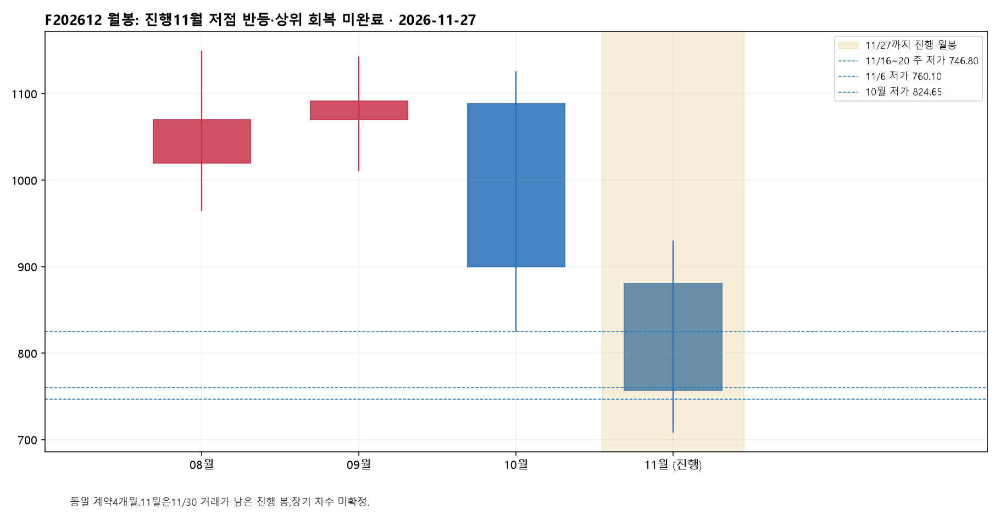
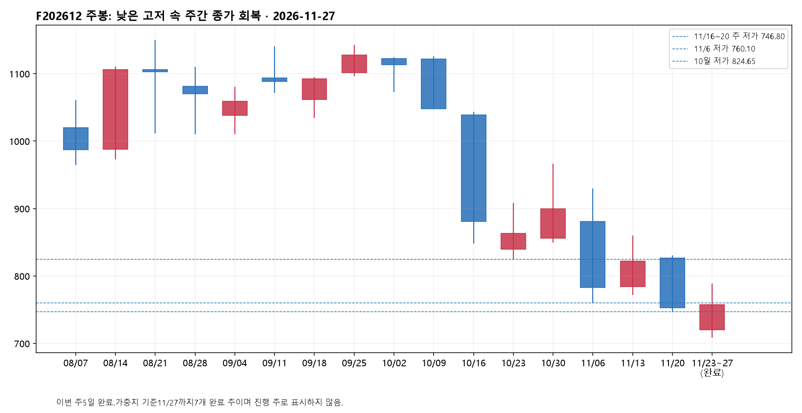
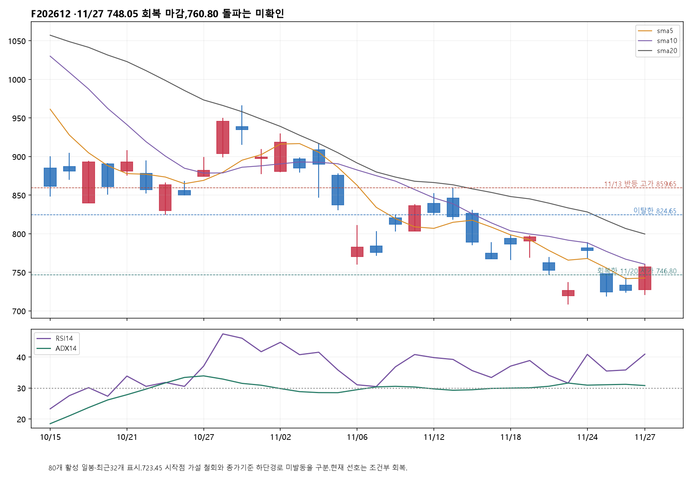
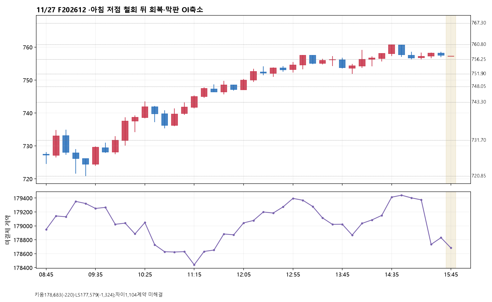
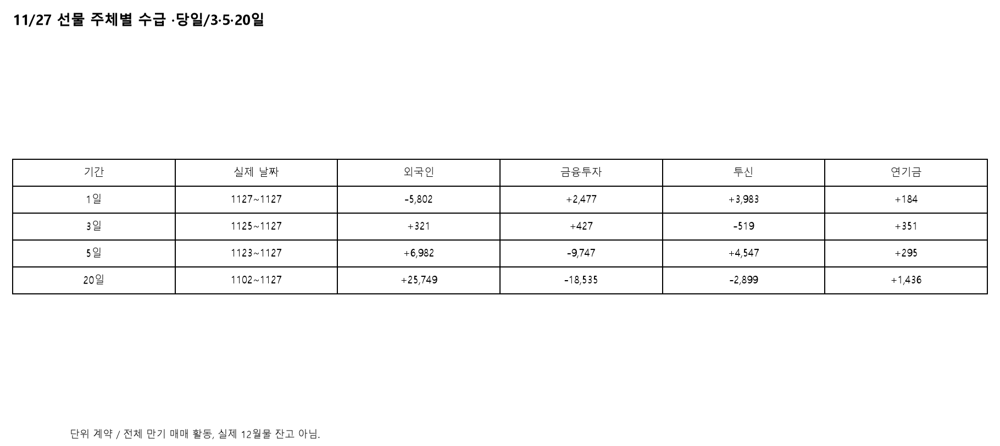
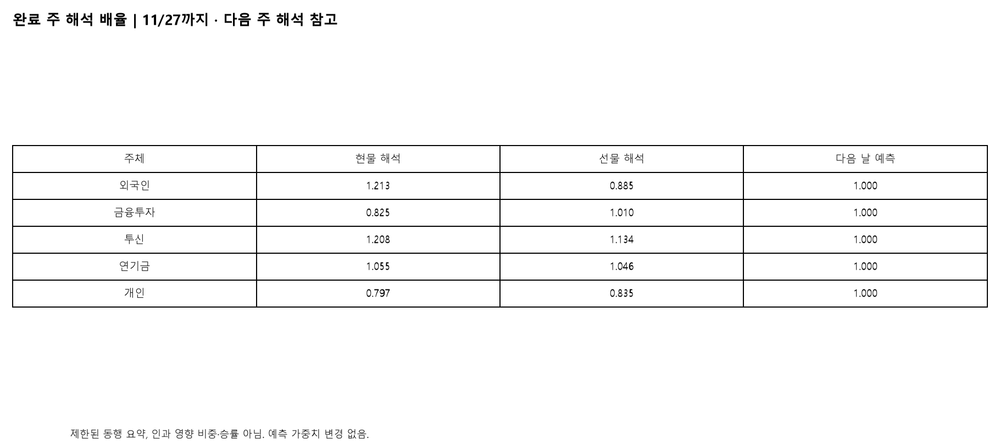
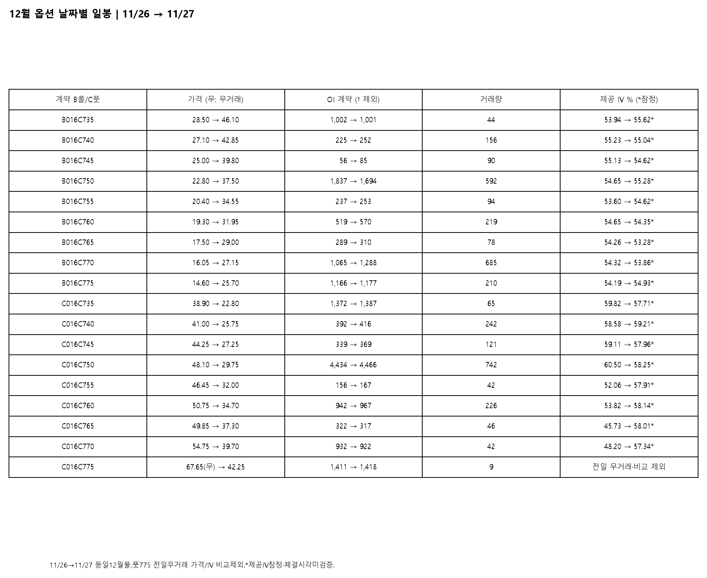

F202612 / A016C000 · 정규장 757.15 · OI 178,683 · 이후 야간 미반영
직전11/26 판은723.45 실제 침범을 오늘 저점 시작점 가설의 철회로,723.45 아래 완료10분봉·반등 재저항을 하단 시나리오 활성 조건으로 분리했습니다. 오늘09:25 표시봉 저가720.85로 첫 가설은 철회됐으나 종가724.45였고,09:15도 저가721.55·종가726.15여서 종가 기준 하단 경로는 미발동입니다. 장중 침범과 확인 후 활성화를 혼동하지 않습니다. 회복 대안은08:55 종가733.05 후09:05 종가728.00으로 첫 유지에 실패했으나09:55 종가731.75,10:05 종가737.55,10:15 저가734.20으로 다시 위에서 지지했습니다.11:15 종가745.00·11:25 저가744.55로743.30을 회복했고,12:05 종가749.95·12:15 저가749.45로748.05 위 장중 재지지도 확인했습니다.760.80 도달과757.15 일봉 마감으로 직전 반등 유지 실패 선호를 낮추고 회복 대안을 현재 선호로 전환합니다. 다만 일봉 마감 뒤 다음 세션의 재지지는 아직 미확인입니다. 상위 앵커859.65(11/13)→708.25(11/23)→789.05(11/24)는 유지됩니다. 선호는708.25 이후 큰 반등 내부 조정 뒤 단기 회복 연장, 대안은 상위 하락 속 ABC형 반등이 저항에서 끝나 재하락하는 경로입니다.720.85 실제 침범은 오늘 반등 시작점 가설 철회,718.50 침범은11/25 저점 기반 반등 가설 철회,708.25 침범은11/23 시작점 가설 철회입니다.789.05 실제 돌파는11/24 반등 종료 앵커 가설의 철회 조건이며 새 상승3파 확정은 아닙니다. 일반 충격파1·2·3·4·5 및 조정3-3-5의 내부 분할이 부족해 차수 미확정이고 하드룰 통과 확정 카운트·피보 목표·미래 확률을 만들지 않습니다.
767.30→778.10~789.05.748.05 아래 완료10분봉·반등 재저항이면 회복 우선도 하향.720.85 실제 침범은 오늘 시작점 가설 철회.
743.30~743.50→731.05~731.70.다시748.05 위 재안착하면 재하락 우선도 낮춤.720.85·718.50·708.25 실제 침범은 각각의 시작점 가설을 별도로 철회.
11/27 F202612(A016C000) 정규장 종가757.15, 전일 대비+30.40(+4.18%)입니다. 직전 약세 우선 가설은 약화됐고 현재는 상위 하락 안의 단기 회복 지속을 선호합니다. 아침723.45 저점 가설은 실제 저가720.85로 철회했지만, 완료10분봉 종가 이탈·재저항 조건은 충족하지 않아 하단 경로가 발동했다고 보지 않습니다. 이후731.70→743.30→748.05를 순서대로 회복하고 일봉도748.05 위에서 마감했습니다. 다음 세션은756.25~756.95와751.90~753.50 유지,760.10~760.80 돌파·재지지를 봅니다. 돌파·안착하면767.30, 이어778.10~789.05가 다음 확인 구간입니다.748.05 아래 완료10분봉·반등 재저항이면 회복 우선도를 낮춥니다. 외국인 현물 매수·비차익 유입과 투신·금융투자 선물 매수는 회복을 확인하지만 외국인 선물 매도·베이시스 할인 확대는 충돌합니다.
직전11/26 판은723.45 실제 침범을 오늘 저점 시작점 가설의 철회로,723.45 아래 완료10분봉·반등 재저항을 하단 시나리오 활성 조건으로 분리했습니다. 오늘09:25 표시봉 저가720.85로 첫 가설은 철회됐으나 종가724.45였고,09:15도 저가721.55·종가726.15여서 종가 기준 하단 경로는 미발동입니다. 장중 침범과 확인 후 활성화를 혼동하지 않습니다. 회복 대안은08:55 종가733.05 후09:05 종가728.00으로 첫 유지에 실패했으나09:55 종가731.75,10:05 종가737.55,10:15 저가734.20으로 다시 위에서 지지했습니다.11:15 종가745.00·11:25 저가744.55로743.30을 회복했고,12:05 종가749.95·12:15 저가749.45로748.05 위 장중 재지지도 확인했습니다.760.80 도달과757.15 일봉 마감으로 직전 반등 유지 실패 선호를 낮추고 회복 대안을 현재 선호로 전환합니다. 다만 일봉 마감 뒤 다음 세션의 재지지는 아직 미확인입니다. 상위 앵커859.65(11/13)→708.25(11/23)→789.05(11/24)는 유지됩니다. 선호는708.25 이후 큰 반등 내부 조정 뒤 단기 회복 연장, 대안은 상위 하락 속 ABC형 반등이 저항에서 끝나 재하락하는 경로입니다.720.85 실제 침범은 오늘 반등 시작점 가설 철회,718.50 침범은11/25 저점 기반 반등 가설 철회,708.25 침범은11/23 시작점 가설 철회입니다.789.05 실제 돌파는11/24 반등 종료 앵커 가설의 철회 조건이며 새 상승3파 확정은 아닙니다. 일반 충격파1·2·3·4·5 및 조정3-3-5의 내부 분할이 부족해 차수 미확정이고 하드룰 통과 확정 카운트·피보 목표·미래 확률을 만들지 않습니다.
전체 만기 선물 당일 외국인-5,802·기관+6,369·금융투자+2,477·투신+3,983·연기금+184·개인-614계약입니다. 금융투자 제외 기관은+3,892계약(기관−금투)이며 기관과 하위 주체를 중복 합산하지 않습니다. 전일 외국인+1,878은 오늘 매도로 전환했고,금융투자-4,480은 매수로,투신+2,362는+3,983으로 이어졌습니다. 외국인 최근3·5·20일은+321/+6,982/+25,749,금융투자는+427/-9,747/-18,535,투신은-519/+4,547/-2,899계약입니다. 기관 세부 매수 개선과 외국인 최근 이탈,남아 있는 중기 누적을 동시에 보존합니다. 외국인·투신 선물 동반 매수 합의는 오늘 깨졌고,투신·금융투자 합의로 바뀌었습니다. 순매매는 실제 잔고·신규 진입·청산의 증명이 아닙니다.
KOSPI 현물 당일 외국인+11,344·금융투자-5,467·투신+2,537·연기금+2,883(LS 원천 금액 단위,원화 환산 미검증)입니다. 같은 현재 조회판의 전일 외국인-885에서 매수로 전환했지만3·5·20일은-7,733/-2,252/-146,910으로 아직 누적 매도입니다. 외국인 지수선물-5,802계약과 주식선물+84,845계약은 현물과도 상품 간에도 방향이 달라 총 노출이나 동일 계좌 헤지로 합산하지 않습니다. 금융투자는 현물 매도·지수선물 매수여서 연계거래 가능성만 남깁니다. 프로그램 당일 총+1,047,334·차익-49,920·비차익+1,097,254(원천 단위),비차익3·5일+184,852/+725,826으로 개선됐으나20일-6,600,857은 여전히 유출입니다.5일 총합·구성합의1단위 차이는 원본대로 둡니다. 마감 후 LS 스냅샷 시장 베이시스-1.36·이론+0.99·괴리-2.35는 전일-0.33/+0.97/-1.30보다 약해졌습니다. 현물15:30·선물15:45 비동시 종가와 제공사 이론모형 비교이며 동시 차익 기회로 확정하지 않습니다. KOSPI200 200종목에서 외국인은 삼성전자+442,354·SK하이닉스+378,282,합계+820,636이고 나머지198개도+203,169·순매수120/순매도78개로 전일보다 확산이 개선됐습니다. 투신 나머지는+137,604·135/62개,금융투자 나머지는-120,698·72/126개입니다. 저장 금액 단위이며 KOSPI 전체·KOSDAQ으로 확대하지 않고 정확한 지수 기여도도 산정하지 않습니다.
원천 표시시각08:45→09:55 가격727.25→731.75(+4.50),OI178,949→179,022(+73)입니다.09:55→11:55는 가격+15.35·OI-151로 청산 동반 상승과 양립하지만 특정 주체 숏커버를 확정하지 않습니다.11:55→14:35는 가격+13.65·OI+541로 참여 회복도 함께 나타나 하루 전체를 청산 반등 하나로 설명할 수 없습니다.14:35→15:25는760.75→757.50(-3.25),OI179,412→178,830(-582),마지막15:45 단일가까지 가격-0.35·OI-147입니다. 오후 상승과 막판 축소를 분리합니다. 집계 수급만으로 같은 투자자의 차익 실현·신규 숏 부재를 확정하지 않습니다. LS CVD는 원본426개 해시와 날짜 앵커67,439개를 확인했지만 t2212 매도 누적 카운터가17쌍에서1씩 감소해 검증 실패입니다.58개 거래량 간격도 남아 당일 최종값·장중 경로·3·5·20일 CVD를 제외합니다. 전일+142를 오늘 값으로 재사용하지 않습니다.
키움 OI178,683은 현재 조회판의 전일178,903 대비-220입니다. 전일 보존 원본180,686과 비교하면-2,003이며 전일 재조회 정정-1,783의 원인은 미해결입니다. LS 당일 일봉과 보존 시세는177,579,같은 전일178,903 대비-1,324로 현재 키움과1,104계약 차이가 납니다. 제공사·조회판을 합치거나 한쪽을 최종 확정값으로 선택하지 않습니다. F202703은 날짜 지정 일봉 종가749.65·거래량149·OI9,634,전일9,610 대비+24입니다. 오늘 차월 증감은 거래량 이내지만 전일+564 대 거래량118의 충돌과 독립 확정성 미검증은 남습니다. 따라서 차월을 별도로 제시하며 롤오버 방향·규모나 합산 포지션은 계산하지 않습니다.
12월물 콜·풋735~775의18계약을 날짜 지정 LS 일봉과 EOD 저장 체인의 코드·행사가·가격·거래량·OI로 대조했습니다. 부분 체인 OI 커버리지31.55%이며 옵션 체결시각은 미검증입니다. 콜755는20.40→34.55·OI+16·거래량94,풋755는46.45→32.00·OI+11·거래량42입니다. 콜760은19.30→31.95·OI+51·거래량219,풋760은50.75→34.70·OI+25·거래량226입니다. 기초자산 상승과 프리미엄 변화는 대조하되 OI 증가를 신규 콜 매수·풋 매도로 확정하지 않습니다. 풋775의 전일 거래량0은 전일 체결가격·IV 변화 비교에서 제외합니다. 제공 IV는 두 마감 후 보존 스냅샷의 잠정 비교이며 동시 확정 IV·스큐가 아닙니다. 외국인 전체 만기 콜-1,167계약/+4억원,풋-1,725계약/+43억원은 수량과 금액 부호도 달라 단일 상승 베팅으로 해석하지 않습니다. 실제 잔고·개시/청산·딜러 보유가 없어 감마·감마플립·최대고통·평단은 판단 불가입니다.
11/26 목요일 위클리 만기 다음 실제 거래일인11/27입니다. 만기일 종가726.75와731.05~731.70 회복선은 오늘 종가까지 상향 회복됐지만,이 결과를 만기 청산 종료가 원인이라고 단정하지 않습니다. 해당 위클리 전체 체인·15:20 전후 동시각 주체별 수급과 잔고가 없기 때문입니다.11월 월간 옵션은11/12 종료됐고 F202612·12월 월간 옵션 최종거래일은12/10입니다. KRX 공식 휴장일과 월간 두 번째 목요일 규칙·공식 증권사 명세를 대조했으며11/27 이후12/10까지 남은 정규 거래일은9일입니다. 위클리·월간·선물 만기를 혼합하지 않습니다. 다음 실제 거래일11/30에748.05 위 유지와 회복선 재지지,외국인 현물·비차익 유입 지속,기관 세부 선물 매수·해당 계약 OI가 동행하는지 확인합니다.
금요일11/27 완료 자료까지10/12~11/27의7개 완료 주로 동행 해석 배율을 새로 계산했습니다. 이번11/23~27 주는5거래일 완료이며 진행 주로 남기거나 전일의6주 배율을 그대로 쓰지 않습니다. 현물 외국인1.213·금융투자0.825·투신1.208·연기금1.055·개인0.797,선물 외국인0.885·금융투자1.010·투신1.134·연기금1.046·개인0.835입니다. 오늘까지의 설명 자료이며 과거 당시 알던 가중치·미래 예측력으로 쓰지 않습니다. 예측 배율은 모두1.000입니다. 현물 외국인·투신 동반 매수·당일 상승 뒤 다음 날 상승은3/8(37.5%;같은 기간 일반 상승일5/14=35.7%),동반 매도·하락 뒤 다음 날 하락은7/16(43.8%;일반 하락일10/20=50.0%)입니다. 선물 동반 매수·상승 뒤 다음 날 상승은2/5(40.0%)로11/26 신호의 오늘 상승이 추가됐습니다. 오늘 현물 매수·상승 신호의 다음 세션은 미확인으로 분모에서 제외합니다. 소표본·사후 선택·시계열 의존성으로 미래 확률·인과 영향력은 산정하지 않으며 옵션 주체 가중치는 자료 부족입니다.
F202612 활성 일봉2026/08/03~11/27의80개와 같은 계약10분봉을 사용했습니다. 주·월봉은 같은 일봉 재표본화입니다.11/23~27 주는 완료,11월 월봉은11/30 거래가 남아 진행 봉입니다. 오늘 정규장08:45~15:45의42개 표시봉에서 마지막 단일가와15:25 이후20분 간격을 분리했습니다. 최근3일11/25~27,5일11/23~27,20일11/02~27을 구분했습니다.9월 만기 뒤9/11~11/27의52거래일 전체 만기 관찰 합계는 외국인+36,947·기관-34,384·금융투자-25,014·투신-6,260·연기금+1,540계약이며 실제12월물 보유잔고가 아닙니다. t1617/t1664 현물 차이75개,전일 재조회 정정5필드(원천4·파생1)를 보존하고 현재 동일 조회판으로 누적했습니다. 월물별 LS 누적 저장소도 기준일·해시를 검사했으나 당일 CVD가 없고3·5·20일 CVD 합계는 결측으로 제외합니다. 과거 저유동성·무거래 가격을 활성 일봉으로 확대하지 않았습니다.
보조 현물 KOSPI4915.68(+4.34%)·KOSPI200758.51을 확인했습니다. KOSPI와 F202612의10/12~11/27 OHLC280개 셀을 키움·LS로 대조했습니다. 국내 다중 시간대·지수 방향 연구·14단계 환경은11/26,해외 본문11/12·검증11/26 PARTIAL이어서 오늘 판단에서는 제외합니다. 나스닥·SOX·다우·니케이의 오늘 완료 세션별 월/주/일/10분 비교와 KOSDAQ 전체 폭은 자료 부족입니다. 과거 ADX 탐색 F202609 26/36와 독립 KOSPI200 30/66 실패는 연구 경계이며 현재 예측력으로 사용하지 않습니다. 보조자료 누락과 검증된 선물 본자료는 구분합니다.

진행11월 O880.80/H930.00/L708.25/C757.15입니다.완료10월 종가899.45·저가824.65 아래입니다.

완료11/23~27 O719.90/H789.05/L708.25/C757.15.직전11/16~20 O826.50/H830.80/L746.80/C752.75보다 고저는 낮지만 종가는 높습니다.

직전11/26 판은723.45 실제 침범을 오늘 저점 시작점 가설의 철회로,723.45 아래 완료10분봉·반등 재저항을 하단 시나리오 활성 조건으로 분리했습니다. 오늘09:25 표시봉 저가720.85로 첫 가설은 철회됐으나 종가724.45였고,09:15도 저가721.55·종가726.15여서 종가 기준 하단 경로는 미발동입니다. 장중 침범과 확인 후 활성화를 혼동하지 않습니다. 회복 대안은08:55 종가733.05 후09:05 종가728.00으로 첫 유지에 실패했으나09:55 종가731.75,10:05 종가737.55,10:15 저가734.20으로 다시 위에서 지지했습니다.11:15 종가745.00·11:25 저가744.55로743.30을 회복했고,12:05 종가749.95·12:15 저가749.45로748.05 위 장중 재지지도 확인했습니다.760.80 도달과757.15 일봉 마감으로 직전 반등 유지 실패 선호를 낮추고 회복 대안을 현재 선호로 전환합니다. 다만 일봉 마감 뒤 다음 세션의 재지지는 아직 미확인입니다. 상위 앵커859.65(11/13)→708.25(11/23)→789.05(11/24)는 유지됩니다. 선호는708.25 이후 큰 반등 내부 조정 뒤 단기 회복 연장, 대안은 상위 하락 속 ABC형 반등이 저항에서 끝나 재하락하는 경로입니다.720.85 실제 침범은 오늘 반등 시작점 가설 철회,718.50 침범은11/25 저점 기반 반등 가설 철회,708.25 침범은11/23 시작점 가설 철회입니다.789.05 실제 돌파는11/24 반등 종료 앵커 가설의 철회 조건이며 새 상승3파 확정은 아닙니다. 일반 충격파1·2·3·4·5 및 조정3-3-5의 내부 분할이 부족해 차수 미확정이고 하드룰 통과 확정 카운트·피보 목표·미래 확률을 만들지 않습니다.

원천 표시시각08:45→09:55 가격727.25→731.75(+4.50),OI178,949→179,022(+73)입니다.09:55→11:55는 가격+15.35·OI-151로 청산 동반 상승과 양립하지만 특정 주체 숏커버를 확정하지 않습니다.11:55→14:35는 가격+13.65·OI+541로 참여 회복도 함께 나타나 하루 전체를 청산 반등 하나로 설명할 수 없습니다.14:35→15:25는760.75→757.50(-3.25),OI179,412→178,830(-582),마지막15:45 단일가까지 가격-0.35·OI-147입니다. 오후 상승과 막판 축소를 분리합니다. 집계 수급만으로 같은 투자자의 차익 실현·신규 숏 부재를 확정하지 않습니다. LS CVD는 원본426개 해시와 날짜 앵커67,439개를 확인했지만 t2212 매도 누적 카운터가17쌍에서1씩 감소해 검증 실패입니다.58개 거래량 간격도 남아 당일 최종값·장중 경로·3·5·20일 CVD를 제외합니다. 전일+142를 오늘 값으로 재사용하지 않습니다.

전체 만기 선물 당일 외국인-5,802·기관+6,369·금융투자+2,477·투신+3,983·연기금+184·개인-614계약입니다. 금융투자 제외 기관은+3,892계약(기관−금투)이며 기관과 하위 주체를 중복 합산하지 않습니다. 전일 외국인+1,878은 오늘 매도로 전환했고,금융투자-4,480은 매수로,투신+2,362는+3,983으로 이어졌습니다. 외국인 최근3·5·20일은+321/+6,982/+25,749,금융투자는+427/-9,747/-18,535,투신은-519/+4,547/-2,899계약입니다. 기관 세부 매수 개선과 외국인 최근 이탈,남아 있는 중기 누적을 동시에 보존합니다. 외국인·투신 선물 동반 매수 합의는 오늘 깨졌고,투신·금융투자 합의로 바뀌었습니다. 순매매는 실제 잔고·신규 진입·청산의 증명이 아닙니다.

금요일11/27 완료 자료까지10/12~11/27의7개 완료 주로 동행 해석 배율을 새로 계산했습니다. 이번11/23~27 주는5거래일 완료이며 진행 주로 남기거나 전일의6주 배율을 그대로 쓰지 않습니다. 현물 외국인1.213·금융투자0.825·투신1.208·연기금1.055·개인0.797,선물 외국인0.885·금융투자1.010·투신1.134·연기금1.046·개인0.835입니다. 오늘까지의 설명 자료이며 과거 당시 알던 가중치·미래 예측력으로 쓰지 않습니다. 예측 배율은 모두1.000입니다. 현물 외국인·투신 동반 매수·당일 상승 뒤 다음 날 상승은3/8(37.5%;같은 기간 일반 상승일5/14=35.7%),동반 매도·하락 뒤 다음 날 하락은7/16(43.8%;일반 하락일10/20=50.0%)입니다. 선물 동반 매수·상승 뒤 다음 날 상승은2/5(40.0%)로11/26 신호의 오늘 상승이 추가됐습니다. 오늘 현물 매수·상승 신호의 다음 세션은 미확인으로 분모에서 제외합니다. 소표본·사후 선택·시계열 의존성으로 미래 확률·인과 영향력은 산정하지 않으며 옵션 주체 가중치는 자료 부족입니다.

12월물 콜·풋735~775의18계약을 날짜 지정 LS 일봉과 EOD 저장 체인의 코드·행사가·가격·거래량·OI로 대조했습니다. 부분 체인 OI 커버리지31.55%이며 옵션 체결시각은 미검증입니다. 콜755는20.40→34.55·OI+16·거래량94,풋755는46.45→32.00·OI+11·거래량42입니다. 콜760은19.30→31.95·OI+51·거래량219,풋760은50.75→34.70·OI+25·거래량226입니다. 기초자산 상승과 프리미엄 변화는 대조하되 OI 증가를 신규 콜 매수·풋 매도로 확정하지 않습니다. 풋775의 전일 거래량0은 전일 체결가격·IV 변화 비교에서 제외합니다. 제공 IV는 두 마감 후 보존 스냅샷의 잠정 비교이며 동시 확정 IV·스큐가 아닙니다. 외국인 전체 만기 콜-1,167계약/+4억원,풋-1,725계약/+43억원은 수량과 금액 부호도 달라 단일 상승 베팅으로 해석하지 않습니다. 실제 잔고·개시/청산·딜러 보유가 없어 감마·감마플립·최대고통·평단은 판단 불가입니다.
2026-11-27T17:12:06.037474+09:00 · 조건부 해설, 자동 주문·비중 변경 아님